BarbecueNight.com Page 5
The Every Thursday Night Barbecue At Dick Flaharty's
The most recent Thursday, followed by the previous barbecues...
7 February: (Camera guy again negligent.) Enveiere Burgess from Napa walked in the door, much to the delight of those who noticed. That is, a 2001 vintage Burgess Enveiere red wine.
The usual discussions wafted among the processes to most beneficially get fired from any government job, which would demonstrate the wisdom of any government employee who seeks to advance their knowledge along with the thinking or questioning portion of society which every government in human history has most sought to disadvantage, rob, imprison, torture, kill or otherwise eliminate from competing with the inherently self-stagnated institution of government which cannot tolerate competition that creates human advancement. Plato suggested that no person be allowed to work in public service (government) until they have worked ten years in the trades to learn what supports the useless burden of government. In contrast, for discussion, the BBQnight.com Committee on Discussion of Government Affairs suggested that every person be required to work two years in government to learn, and be frightened by, what has been stagnating human advancement since government was invented. But the latter requires commonly intelligent (common sense) people who are prior taught how individual freedom and competition for new knowledge and skills (open questioning of all prior knowledge) creates human advancement, knowledge nearly extinct in the failing US Government Nanny Police State and its dumbed down subjects.
That concluded, the entire BBQnight Committee As A Whole adjourned to the parking lot with kid's bubble blowing stuff to blow bubbles in the 42 decrees below 0 air. For the small percentage of readers who are puzzled at the moment, the bubbles immediately freeze, and drift with slightly more buoyancy in the cold dense air. Thereupon, one can poke holes in them, even remove portions of them, and the remaining portion of the phrozen sphere continues drifting about, with the image of planets and moons in the night sky. The bunches of bubbles that settle on the snow, being structural, roll around like rafts of ball bearings, with the slightest movement of air. Well, it is easy to entertain adults, as every bubble blowing kid quickly learns.
A local who recently visited the REI (Recreational Equipment Incorporated) Zoo in Seattle described her adventure among the city-caged lower-48'ers in that zoo. They observably function quite naturally among themselves in the aisles of the store, scurrying back and forth, picking up stuff. They are so caught up with their functioning that you can walk right through groups of them and not be noticed as a different species. Occasionally they escape the city, but can be quickly spotted if they get out into recreation land where they survive for only short durations of time. Fortunately the Galaxy was designed to prevent their escape from their solar system, but Galaxy guards still monitor their solar system perimeter to preclude the destructive humans from infecting any other part of the Galaxy. All well and good for the Bill Clinton's, Saddam Hussein's, George Bush's, their slavering supporters and such solar system viruses to slaughter their own kind on their own playground, but there is no reason to allow the spread of such diseases off the playground.
Discussion on the design of early tubular climbing chocks was interrupted by the value of a math degree and pulling teeth the old fashioned way, while ice caving got rolled over by comments on the verifiable inability of lawyers to understand the meanings of words even if you hand them Black's Law Dictionary or an English teacher.
The Burgess, long gone and well remembered as each not fully competing bottle of otherwise fine wine was thereafter opened, mention of K Bohaty of L.A. raised curious questions of Fairbanks climbing history. There are many mysteries among the humans, more among the climbers, some starting among glacier crevasses.
The sail boat analyses advanced. We need more sail boat owners to show up, among the several who do. The local sea kayakers want to keep track of who is where with what sail boat, to paddle up to when conditions leave camping on the shore less inviting.
Everything else was declared verboten for uploading, for a classified reason not subject to review by anyone with the ability to ask questions. However, Jihad and bombing the Whitehouse would be unwise and illegal, while to upload such words triggers the government Carnivore computer spy alarms and increases website readership among the burgeoning legions of new government spies who do not have a life of their own, cannot figure out how to create one (or they would quit their useless jobs), would otherwise be on welfare, and are at least entertained.
31 January: Some BBQnights delve more extensively into distant concepts.
As a typical Alaskan adventurer, what questions would you ask, of whom, to get a cheap ticket on the most plush train car of a Tanzanian train after all the tickets for the entire train were sold? The BBQnight sorts are a source of such knowledge. It is whom one would ask, and how to find them. They are not whom the unlearned with impressive titles would guess. Of course that, after an analysis of the nature of those present was ascertained for security reasons, led to the historically secret knowledge, known to certain people but never ranking military officers, especially in the illusionary units of "military intelligence", of from whom, and how, with which questions, to derive all the information of each next day's military operations by both sides in any war. Social phenomena are a result of the design of the human mind, regardless of the social setting or interaction category. Learn the design, available from a certain type of questioning, and you access that which eludes those who most crave access instead of knowledge.
Calibration gasses to analyze machine data are becoming more refined. However, inducing rain to clean the dense Chinese smog for the duration of the Olympics would only rain on the party, and fail the goal. Well, there was more than one conversation at full volume, and the scribe was writing notes that got slaunchwise with the flow of data. China needs air mass exchange, not rain drops. A nuclear explosion near Beijing might work, but it would induce other problems. The Chinese are working on the problem, and becoming more desperate. If the world shows up in China for the Olympics, and discovers how many Chinese are each doing only little to the environment, the Olympics may prove to be a profound error for the Chinese military industrial complex predicated on creating the same massive, government-protected pollution of everything, as the US military industrial complex that owns the DemocanRepublicrat Regime.
For access to elusive information, they should ask the kitchen help and gypsies, but are instead asking their fellow government officials they appointed because they are as ignorant as their colleagues who appointed them, identical to the US DemocanRepublicrat Regime which is therefore increasing the magnitude of the US problems while the openly verifiable solutions are readily available from certain categories of common people with whom the government dolts dare not communicate for fear of exposing the illusion of superiority among mutually appointed government dolts. How do you think Bush, Cheney, Clinton and those intellectually void sorts arrived at their positions and the worsening results?
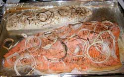
One must learn how to ask effective questions, which is knowledge never learned by institution leaders who dodge questions with Olympics quality skill, and thus train their mind to not understand effective questions.WinterKing.com halibut and silver salmon. Always a luscious change from the same old moose arrangements.
The process to easily create history today, that will be widely recognized in 100 years as openly demonstrating the superior wisdom of he or she who creates it, and the abject failure of the government leaders of today by intentionally illuminated comparison, and have fun doing that, was itemized by those present who opened the best bottle of wine the moment it arrived.
The benefits of private enterprise crime, in comparison to government enterprise crime were illuminated, as a conversational aside. While Hitler created an efficient and safe society by killing all the suspects and passers-by to therefore become the monopoly German criminal of the time, just as Bush and Cheney are attempting with the Police State prison empire in the US, the attempt to monopolize the crime industry fails for the same reason as that of all power-based monopoly attempts (religion, law, medical, government, etceteras) amid the diversity of human minds isolated by craniums, effectively synthesizing diverse data with
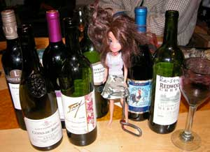
the cranial mechanism of reasoning, not institutional power, by design, a brilliant design.The control, to any minor extent possible, of hydrogen and carbon transfers out of the atmosphere, into the planet or into space, to clean the air or explain the process, might be effected by exploding nuclear bombs in active volcanoes, to induce greater volcanic activity. Further, keeping welding rod flux dry can effect similar results, on a smaller scale. That is, unless those two conversations were separate, and the scribe was again in the middle trying to manage the wine transfer.
The Public Broadcasting Service (PBS) personnel can never state, due to their institutionally induced ignorance and fear of truth, the controlling social concept of humans, on the air: "Institutional power always defeats itself, always, by design." Like Cheney and his Side Kick Bush, PBS seeks power, and they too shall therefore pass, not soon enough, after maximizing their damage to society. Their power will continue serving itself, at cost to humans, by design, much to the amusement of the observers, and for the conversational value at BBQnight.com.
As to the matter of those Germans. A German who survived a concentration camp as a kid, who came to Canada, did not learn how to read until he was 78 years old. But he did learn how to make money at an early age, a lot of money, in the concrete business. He commented that shipping is cheap in the mix of production costs. Somebody inform the wine producers. Some lower 48 wineries charge 120 dollars to ship a case of wine to Alaska, and others ship for free. Send some Germans to California.
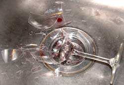
Radar imaging for glacier crevasses and moulins is advancing, albeit slowly. The goal is to replace the climber's and moulin explorer's need for rope on the approach. Of course the DemocanRepublicrats are wasting millions of dollars using the technology for the military goal of more efficiently slaughtering people.The process to manifest world peace, regardless of opposition, was again introduced, but because such knowledge is so feared by people, or it would have been manifested centuries ago, the conversation fell sideways into the government's computer spying programs, and the citizen's anti-spying programs. We assisted the citizens by diverting some government spy computer time to the above referenced nuclear explosion near Beijing. We will throw in a Jihad, al-Queda and a bomb at the Whitehouse, for free.
And just who has what and whom on their MySpace drifted through the crowd which has yet to get a video camera for a YouTube adventure. BBQnight.com on YouTube. Hmmm.
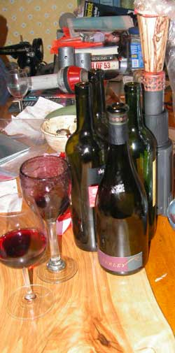
24 January:
A Turley walked in the door, and the conversation elevated.
It was already afloat, so the mere presence of California's finer grape nuances easily leveraged the rhetorical illusions above whatever it was the usual eclectic sorts were discussing.
There was something about the common expression of electing the lesser of evils as leaders in American government. It is not so much that the results are obvious to the world, with America being the most war-mongering nation since WWII, but that the DemocanRepublicrat politicians literally cannot understand how they are perceived by the public even when you tell them yet again that they were elected as an evil. Their power-damaged minds actually perceive themselves as of such a superior design to the minds of the Americans who elect them, that the politicians can make everyone else's decisions for them, and jail people if they do not kowtow to the decisions. Nothing has changed from the rule of ignorant kings, especially among the dumbed-down Americans who elect the evil RepublicratDemocan kings.
The conversation included Ron Paul the confused Republican who claims to be libertarian, incapable of recognizing them as opposing concepts. He openly states that the war in Iraq was a bad decision to start with (obvious), continues to get worse (inherent), and he would withdraw all American troops from Iraq the day he was elected as President (logical). And therefore the idiot news journalists who say they oppose war ignore him because they would rather have news-selling wars at cost of the fools who flock to wars, than manifest their own espousals. That describes the power-damaged mind. News media journalists are the real leaders of the war-mongering Americans, leaving the politicians as the lesser of evils.
No snow in Poland. How do we know? The big cross country ski meet there was postponed after Alaskans bought their tickets. Only a Polish snow committee could forget to arrange snow for the ski meet.
Some left-over conversation from No Notice Monday illuminated some old maps of Alaska, made before they could check the data against GoogleEarth. The early maps reveal much. The current online map data reveals what the GoogleEarth programmers like or do not like about anything or anyone, anywhere. What do you want on GoogleEarth? What are your politics? With the data flow at flood stage, the games within the flow are more fun than the flow. If you are not laughing, you are missing the data.
The Ice Towers were discussed to a great (vertical) extent, on account at the temperature was dropping, and some of the ice crew were apprehensive about lead climbing the ice on Saturday, to add more pipe. They complain a lot, then laugh about how much fun they had.
A serious discussion compared the wisdom of owning a Klepper kayak with a sail, a something-or-other cool small sail boat, or a real 30 footer. These are interior land-lubbers without enough money for more good wine. But the discussion went into the detail that only such people can create with any subject. They will make room for you to park your sail boat if you show up with the wine and the knowledge they claim they already have.
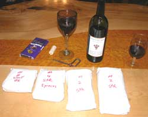
17 January: It snowed, finally. Skiers and snow machiners have disappeared into the woods, leaving the rest of us with the food and wine they abandoned.
Some moose steaks showed up. The moose guy has a little difficulty with culinary adventures involving more that two ingredients, moose and wine.
A guest lecturer and a local camera design analyst discussed the most desirable camera for the photographically astute Alaska outdoor adventurer, for the benefit of those attending. Not sure what cameras were discussed but they were certainly discussed in emphatic terminology familiar to independent minded Alaska adventurers whom you darn well better agree with just to escape the conversation to get the camera.
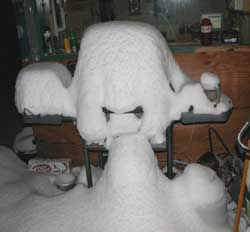 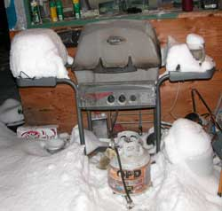
The currently dire political straits were successfully navigated to the conclusions you have already discovered, which of course will never be known by the politicians and foolish people supporting them. If what each prior politician said was true, as foolishly believed by said foolish people, why do the same problems still exist, and are worse? The wrong choice of cameras can only waste your money. The choice of any politician is always wrong, as each next one so accurately describes.
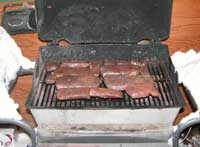 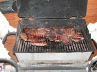 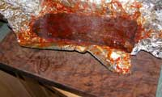
The foil wrapped, way good spiced backstrap of some animal was photographed to again display the cool curly bubinga cutting board.
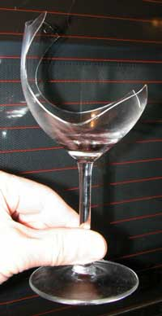 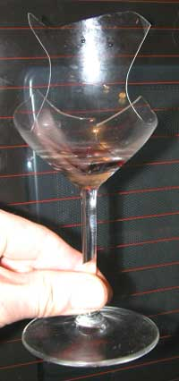
An in depth analysis of the verifiable damage that the acquisition of institutionally perceived power does to the minds of the local University of Alaska police again illuminated the wisdom of selecting any other University for a rational education. Said police, as is the case with the entire cancerous American Police State, have expanded their jurisdiction to prey upon anyone in the Fairbanks area, beyond their campus area, and will physically grab anyone they perceive they can overpower, for any excuse in countless inferior laws contradicted by superior laws (fraudulent actions), without lawful reason in any prevailing law. Their motive is the usual ego gratification of power damaged minds, and enforcement budget excuses never questioned by the pitiable University of Alaska administrators who cannot understand why more intelligent people are choosing university educations outside the American Police State. Amusing lot these humans. The institutions which teach history invent it as they teach it, or they would recognize the flawless failure of the use of force above reasoning, the primary lesson of human history.
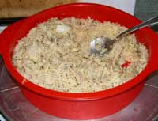
I thought it was a dog dish, and was corrected.
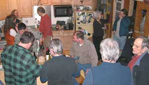 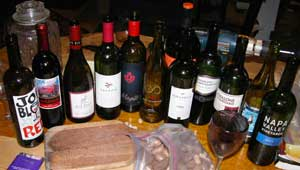
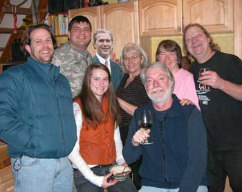
In fact, the foundation of future Fairbanks tourism was designed. It was so well designed that in a few years the BarbecueNight.com folks may be mentioned as those who started it, unless a few dozen other groups doing the same thing get more attention sooner. Over 80 percent of the tourists coming to Fairbanks are corralled by Carnival Cruise Lines and its subsidiaries. Carnival simply created the most efficient tourism program, and is to be commended, albeit cutting out nearly all local businesses and the diversity of genuine Alaska experiences.
In reaction, all the heavily government-funded Alaska tourism organizations do the same thing to cut out all the real Alaskans inherently not among the political insiders dependent upon tax money, a normal thing among organizationally functioning people. Like all politically and organizationally self-fooled people, they cannot comprehend how they would be more prosperous by facilitating the diversity of individual ideas and ability. Their ignorance, greed and demand for centralized control, defeat the greater prosperity of society and thus them and their offspring, much to the profit of the more-thinking Carnival folks, and to the amusement of observers.
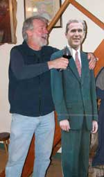 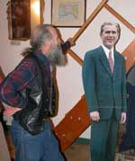 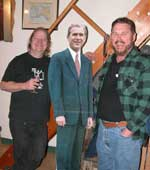
But the internet is not yet subject to the Kremlin styled central Washington DC and Carnival authority. It is however, yet new to its own ability, and thus not yet efficiently facilitating the inescapable collapse of the Kremlin styled empire governments (US) and government-connected mega-businesses. Like Saddam, George Bush and his power-mad central clique cannot imprison and kill enough innovative internet thinkers fast enough to defend the raw power of the moribund central authority from the advancement of the human intellect.
We live in exciting times. Get involved, and enjoy the show. Expect to hear about how the locals designed the most effective Alaska tourism program while the DemocanRepublicrat Regime in Juneau funded only Kremlin and Washington DC styled illusions. Or show up to enjoy designing them. Just bring good wine, maybe two bottles.
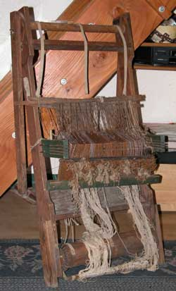
3 January: A scheduled guest lecturer from (has seen) the Antique Road Show (on TV) gave a dissertation on early Russian-Alaskan weaving looms recently found at "The Mall" (dumpsters). Do you have any idea of its value? Unfortunately a close inspection revealed that the loom had not come over on the Mayflower, as believed by the recent owner, which is why the loom was therefore thrown away. But the same close inspection coupled with the expert lecturer's expertise revealed that it may have come over from Russia, with Admiral Vitus Bering. The fact that it may not have, only increases the intrigue and therefore its value. For an insurance value, the lecturer, who by chance is in the insurance industry, recommended at least 150,000 Euros. The warp and weave remaining on the loom was dated as originating prior to the Antique Road Show, enhancing its story value. Being featured at BarbecueNight.com, and if kept in good condition for another 200 years, and if signed by Elvis Presley, it might fetch, ah, at least a discussion. What shows up at BarbecueNight.com is sometimes worth, ah, discussion.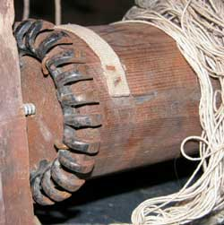
A locally known technician who shares the common disdain for the stench of cigarette smoke explained the benefits of the SubKindler for the nicotine dependent chaps. They can breathe warm air saturated with nicotine, without the lung damaging carbon particles and extraneous chemicals offensive to olfactory perceptions. Yet again the people who smoke those other things demonstrate more intellectual acuity to devise the mechanisms that benefit those intolerant and offensive DemocanRepublicrat nicotine addicts who continue to jail said thinking people for the American crime of (easily) thinking more than RepublicratDemocans. Soon enough even children will ridicule the DemocanRepublicrat majority in the US for its primitive intolerance of more thinking humans. The Bush/Clinton groupies still perceive that they can imprison and war their way to a more thinking society, much to the amusement of the observers.
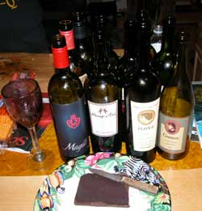
Something was said that must have been of some significance.
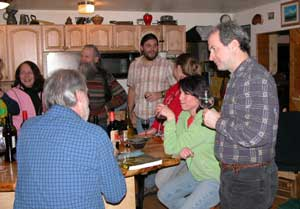
The National Public Radio guy who showed up from California, of all places, for a few months, who was repeatedly offered the story which would get him the Peabody Award (verifiable), and who was only amused by the offer, instead of sufficiently curious to ask the related questions, announced his foolish departure back to California despite the more astute suggestions that he quit his job, sell his airplane ticket, and become another Fairbanks end-of-the-roader like those two guys in the photos.And then the cyclical cycle of the Mall market for the artifact astute urban archaeologist was pontificated upon and over, more than once. Knowing the human reactions to each general social event can be highly beneficial to the intellectually astute and Mall shoppers. A windfall of urban visual forest regeneration is currently available with the post Christmas artificial Christmas trees being presented at The Mall. Hey, they look better than the real trees, make wonderful driveway borders, and are not subject to spruce beetle damage.
The Ilona, Magito, Guenoche and Foli a Du wines were noted among the other notable wines, with a home created chocolate of equal acclaim, and some culinary adventures involving varied New Year's eve party leftovers.
Page 6 February 08 ---- March 08
Page 7 March 08 ------- September
08
Page 8 September 08 --- December 08
Page 9 December 08 --- May 10
Page 10 September 10 - Present
Page 1 November 06 --- April 07
Page 2 May 07 --------- August 07
Page 3 August 07 ------ October 07
Page 4 October 07 ----- December 07
Links